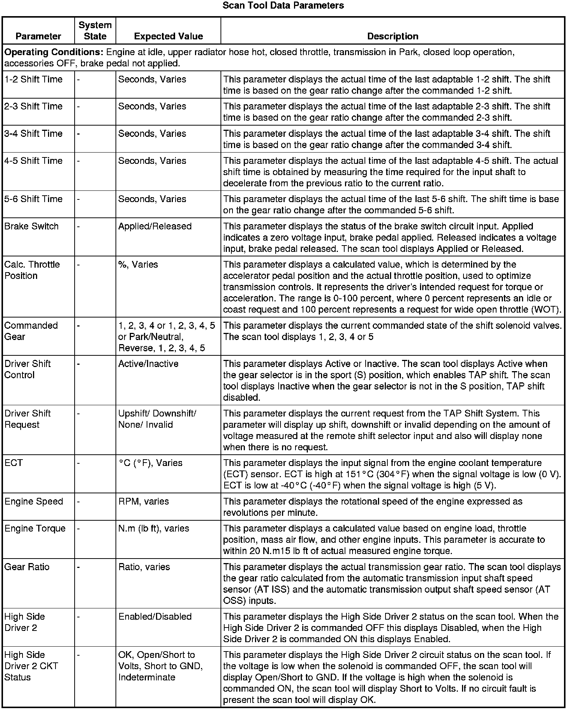
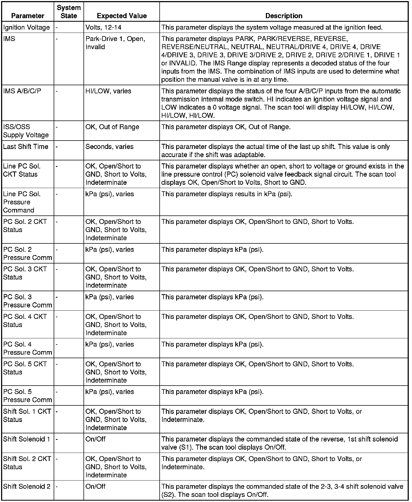
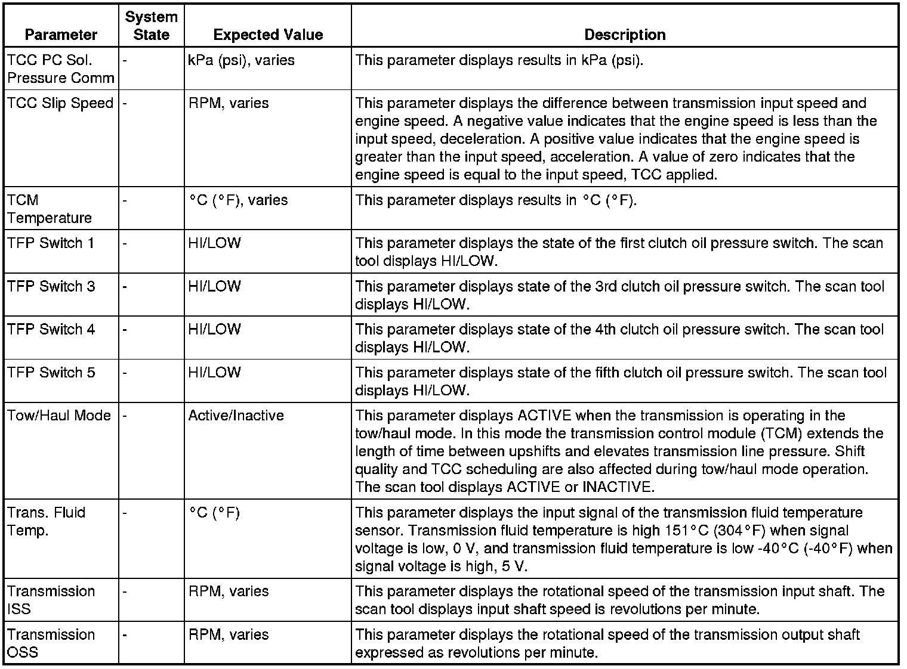
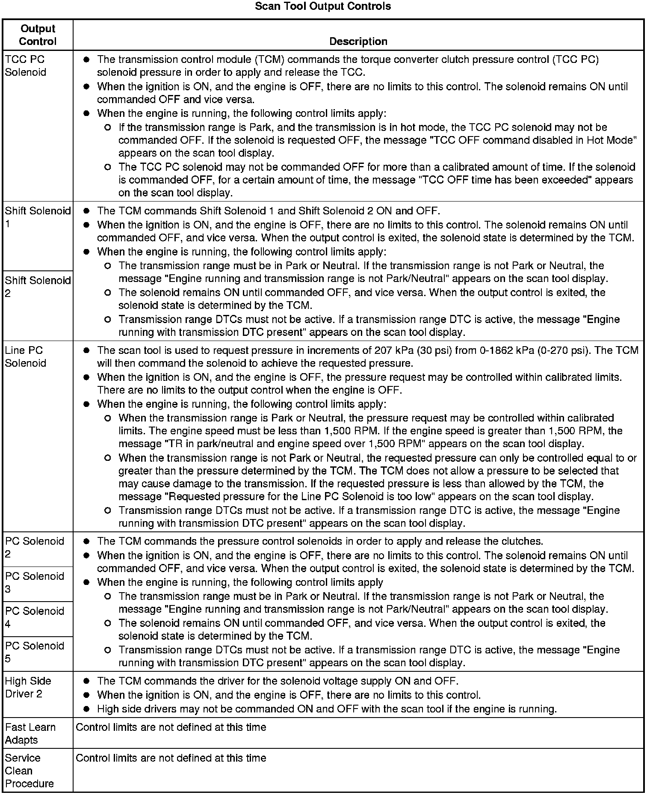

Transmission Control Module Scan Tool Information (6L50/6L80/6L90)
Transmission Control Module Scan Tool Information (6L50/6L80/6L90)
The Transmission Control Module Scan Tool Data List contains all transmission related parameters that are available on the scan tool. The list is arranged in alphabetical order. A given parameter may appear in any one of the data lists, and in some cases may appear more than once, or in more than one data list in order to group certain related parameters together.
The values below represent a typical display recorded from a properly functioning system.
Important: Do not use a scan tool that displays faulty data. Report the condition to the scan tool manufacturer. The use of a faulty scan tool can result in misdiagnosis and the unnecessary replacement of parts.
Only the parameters listed below are used/referenced in this manual for diagnosis. If a scan tool displays other parameters, those values are not recommended by General Motors for use in diagnosis.
If all values are within the expected range described below, refer toSymptoms - Automatic Transmission (- Symptoms - Automatic Transmission) for diagnosis.
The scan tool values from a properly functioning transmission may be used for comparison with the transmission you are diagnosing. The values below represent a typical display recorded from a properly functioning system.



